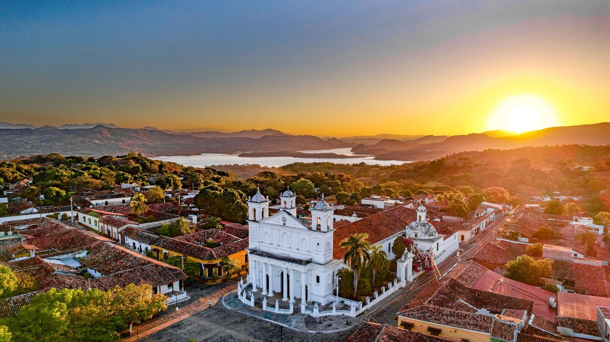

Formación natural con columnas basálticas de origen volcánico.
Durante la época lluviosa, la caída de agua resalta la singularidad geológica del lugar.

Suchitoto
Ciudad colonial con calles empedradas
y fuerte tradición cultural. Es sede de festivales artísticos
y ofrece vistas hacia el lago Suchitlán.